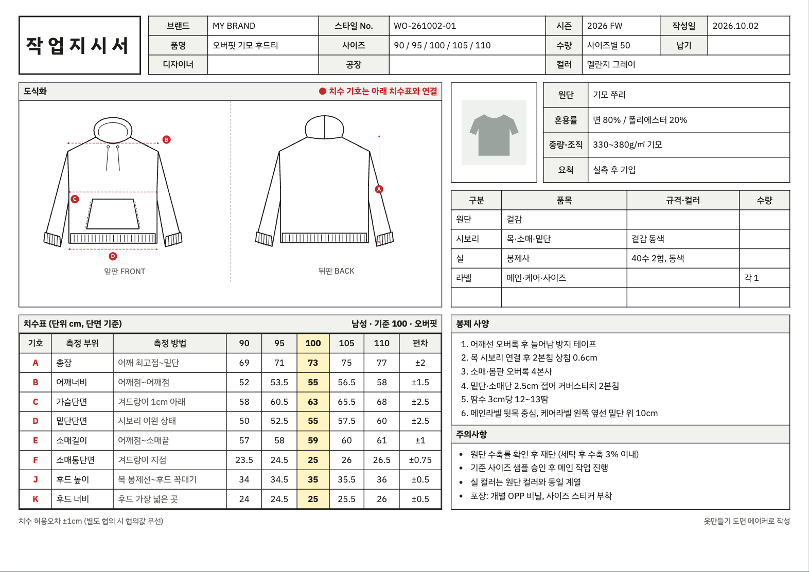

도식화
앞판 · 뒤판 자동 드로잉
품목과 디테일에 맞춰 선으로 그린 도식화를 만들고, 치수 기호(A·B·C…)를 빨간 점선으로 표시해 치수표와 연결합니다.
옷 사진 한 장과 사이즈만 고르면 도식화 · 치수표 · 봉제 사양까지 담긴 작업지시서가 A4 한 장으로 나옵니다.
회원가입 없이 무료 · 사진 자동 인식도 내 기기 안에서 · 인쇄와 PDF 저장 지원

공장에 샘플을 맡길 때 필요한 서류를 4단계로 끝냅니다.
만들고 싶은 옷의 정면 사진 한 장. 직접 그린 스케치나 내 샘플 사진이면 충분합니다.
남성 80~110, 여성 44~88 중 필요한 사이즈와 기준(샘플) 사이즈를 고릅니다.
사진을 올리면 품목·디테일·컬러를 자동으로 인식합니다. 틀린 부분만 고르면 도식화와 치수표가 바로 바뀝니다.
표의 글자를 눌러 실측값으로 고친 뒤 A4 한 장으로 인쇄하거나 PDF로 저장합니다.
동대문 봉제 현장에서 쓰는 형식과 용어 그대로 정리합니다.
품목과 디테일에 맞춰 선으로 그린 도식화를 만들고, 치수 기호(A·B·C…)를 빨간 점선으로 표시해 치수표와 연결합니다.
품목별 기준값과 사이즈 편차로 전 사이즈 치수를 채웁니다. 오버핏·슬림 보정과 바지 허리 인치 표기도 됩니다.
오버록, 2본침, 커버스티치, 시보리처럼 공장에서 바로 알아듣는 말로 기본 사양을 채워 줍니다.
싱글저지, 쭈리, 데님, 옥스포드 등 원단을 고르면 혼용률과 중량이 채워지고, 부자재 표도 품목에 맞게 준비됩니다.
치수를 넣으면 다트·시접·골선까지 계산한 패턴을 그리고, A4에 나눠 실물 크기로 인쇄합니다. 작업지시서는 A4 가로 한 장으로 나옵니다.
품목·디테일·컬러 인식을 브라우저 안에서 무료로 합니다. 사진은 사이트 서버나 AI 회사로 보내지 않습니다.
작업지시서를 처음 써 보는 분도 공장과 같은 언어로 말할 수 있게 돕습니다.
패턴실이나 생산 담당 없이 첫 샘플을 맡겨야 할 때, 빠진 항목 없는 지시서로 수정 횟수를 줄입니다.
사입 상품을 넘어 자체 상품을 만들 때, 사이즈별 치수와 봉제 사양을 한 장으로 정리해 공장과 소통합니다.
도식화, 치수 측정 위치, 봉제 용어를 실제 현장 형식으로 익히는 연습 도구로 쓸 수 있습니다.
처음 쓰기 전에 많이 물어보는 내용입니다.
무료이며 회원가입 없이 바로 쓸 수 있습니다. 만든 작업지시서는 인쇄하거나 PDF·HTML 파일로 저장합니다.
치수표는 품목별 레귤러핏 참고 표준값입니다. 샘플을 실측한 뒤 표의 숫자를 눌러 고쳐서 보내야 합니다. 측정 방법은 작업지시서 작성법에 정리했습니다.
사진은 사용자의 브라우저 안에서만 처리되며 사이트 서버에 저장하지 않습니다. 기본 사진 인식도 기기 안에서 이루어집니다. Gemini API 키를 직접 넣은 경우에만 사진이 Google로 전송됩니다. 자세한 내용은 개인정보처리방침을 확인해 주세요.
사진을 올리면 브라우저 안에서 무료로 품목·디테일·컬러를 인식합니다. 처음 한 번 인식 모델(약 23MB)을 받고, 사진은 서버로 보내지 않습니다. 결과가 틀리면 후보를 누르거나 직접 고르면 됩니다.
반팔 티셔츠, 긴팔 티·맨투맨, 셔츠, 후드티, 자켓·점퍼, 바지, 반바지, 스커트, 원피스 9가지 품목을 지원합니다.
H라인 스커트와 사각 지퍼 파우치는 치수를 넣으면 다트·시접·골선·너치까지 계산한 패턴을 그리고, 실물 크기로 A4에 나눠 인쇄할 수 있습니다. 다른 품목은 차례로 추가할 예정입니다.
하의는 호칭(남 80~110, 여 44~88)과 허리 인치를 함께 적거나 인치만 적도록 고를 수 있습니다.
사진이 없어도 품목만 고르면 바로 시작할 수 있습니다.
자체 디자인·자체 샘플에 사용해 주세요. 다른 회사 제품의 형태를 그대로 모방하는 것은 부정경쟁방지법상 문제가 될 수 있습니다.